附加题（选做）¶
附加题安排与选做指南
本页包含四道选做附加题，均不属于任务一、任务二的必做范围，同学们可以根据兴趣和时间自由选择：
| 附加题 | 你将实现什么 | 需要先在附加题一中完成的普通 FS 功能 |
|---|---|---|
| 一：扩展功能 | 为自己的 newfs 补齐文件读写、删除、移动、链接或大文件支持 |
已完成基础实验（挂载、卸载、ls、touch、mkdir、持久化） |
| 二：CheckpointFS | 为文件创建独立历史快照（create），并通过“复制历史 + 硬链接切换”安全回滚工作文件（restore） |
普通文件读写（read/write/truncate）、目录创建与查询、文件删除（unlink）、硬链接与链接计数（link/nlink）、重挂载持久化 |
| 三：VectorFS | 将 /.search/<query> 呈现为动态目录，将搜索结果呈现为指向 /documents 下原文档的软链接 |
普通文件读写、目录创建与递归遍历（getattr/readdir/read）、重挂载持久化，以及日常维护文档所需的删除/重命名 |
| 四：模型训练 | 在自己的文件系统上直接运行 PyTorch 训练脚本，完成数据集读取与模型参数保存 | 普通文件读写、重挂载持久化，以及支持至少 1MB 的单文件容量（如间接块或预分配扩展） |
1. 附加题一：扩展功能¶
本题目标： 在基础实验已经跑通的“青春版 EXT2（newfs）”基础上，亲手补齐普通文件系统的核心操作，并验证它们的语义与重挂载持久化。 本题可以作为独立成果提交；如果你计划继续做 CheckpointFS、VectorFS 或模型训练，请先在本题中把对应能力实现扎实。
基础实验稳定通过后，你可以从以下扩展方向中按需选择实现：
- 文件读写与大小调整 ：支持
read、write、truncate，能够向文件写入跨块数据并准确读回； - 文件与目录删除 ：支持
rm（unlink）、rm -r（配合rmdir）； - 文件重命名与移动 ：支持
mv（rename）； - 硬链接与软链接 ：支持
ln（link，维护nlink引用计数）或ln -s； - 大文件容量扩展 ：引入一级/二级间接块索引，扩大单文件容量上限。
这些功能对应的 FUSE 钩子函数包括：
newfs_open、newfs_opendir：打开普通文件和目录；newfs_access：检查路径是否存在及访问权限；newfs_read、newfs_write、newfs_truncate：读写文件数据、修改文件大小；newfs_unlink、newfs_rmdir：删除普通文件和目录；newfs_rename：重命名或移动文件、目录；newfs_link：在目录中新增指向已有inode的目录项，并维护硬链接计数nlink。
动手前的关键检查：别忘了挂载 operations 函数表！
在初始生成的 src/newfs.c 中，operations 结构体里的 .write、.truncate、.unlink、.rmdir、.rename 等字段初始为 NULL，且尚未列出 .link。同时，模板里的选做桩函数（如 newfs_write、newfs_unlink）初始直接返回了 size 或 0。
因此，当你实现某个扩展钩子时，请务必确认两件事：
- 把函数指针填入
operations结构体 （例如实现硬链接时，在include/newfs.h中声明newfs_link，并在operations中加上.link = newfs_link,）。 - 填写真实的磁盘/内存操作逻辑 ，不要让未实现的函数返回“假成功”。
本题直接修改你自己的 fs/newfs。CheckpointFS 和 VectorFS 所需的支持文件已经随 ./setenv.sh 自动生成在工程中，CMake 和 FUSE 路由也已预先接好；当你完成本题中对应的前置功能后，即可按照 附加题二、三的工程准备 直接去填那两道题的 TODO。
1.1 读写文件¶
建议先参考 simplefs 完成 newfs_open、newfs_opendir、newfs_access、newfs_truncate，再实现核心的 newfs_read 和 newfs_write。后续附加题会直接调用你实现的这些普通文件接口。
文件读写的核心流程是：先通过路径解析（lookup）找到目标目录项（dentry）及其 inode，检查它确实是普通文件且偏移量 offset 合法，然后在内存数据区与用户缓冲区 buf 之间拷贝数据。
需要注意的是：在 simplefs 中，sfs_read_inode 采取了固定分配数据块的方式；而在我们的 newfs 任务二中，要求 按需分配数据块 。因此在实现 newfs_write 时，当写入范围（offset + size）超过当前已分配的数据块容量时，你需要动态分配新的数据块、更新数据块位图，并在卸载（destroy）时把数据块内容刷回磁盘。
1.2 文件与目录的删除（含硬链接计数）¶
删除功能通常借助 drop_inode 和 drop_dentry 两个内部辅助函数完成：
drop_dentry：从父目录的inode下移除指定的目录项；drop_inode：回收一个inode及其占用的数据块和位图标志（如果是目录，还需递归清理其子目录项）。
在没有硬链接的 simplefs 中，sfs_unlink 删掉目录项时直接释放了 inode：
int sfs_unlink(const char* path) {
...
/* simplefs 无硬链接时的简化做法：直接释放 inode，再移除目录项 */
sfs_drop_inode(inode);
sfs_drop_dentry(dentry->parent->inode, dentry);
return SFS_ERROR_NONE;
}
但如果你要支持硬链接（或者准备选做 CheckpointFS），就不能一删目录项就立刻释放 inode！ 硬链接的核心语义是“多个目录项指向同一个 inode”：
newfs_link(source, target)：先找到source对应的inode，再在target的父目录下创建一个新的dentry指向同一个ino/inode，并将该inode的硬链接计数nlink加 1（ 不复制文件数据块 ）。newfs_unlink(path)：从父目录移除当前dentry，并将对应inode的nlink减 1； 只有当nlink减到 0 时，才调用drop_inode真正回收inode位图、数据块位图和磁盘数据 。newfs_rename(from, to)：如果目标路径to原本已经存在，覆盖它时同样相当于对旧目标做了一次unlink（减少旧目标的引用计数）；如果from和to原本就指向同一个inode，按 POSIX 语义直接返回成功即可（注：CheckpointFS 的恢复操作通过unlink + link完成，不依赖rename）。
回收 inode 时，除了像 simplefs 那样清零 inode 位图，别忘了在 newfs 中一并清零该 inode 所占用的 数据块位图 ：
int sfs_drop_inode(struct sfs_inode * inode) {
...
/* 逐字节扫描 inode 位图 */
for (byte_cursor = 0; byte_cursor < SFS_BLKS_SZ(sfs_super.map_inode_blks);
byte_cursor++)
{
/* 再逐位检查当前字节中的 8 个 bit */
for (bit_cursor = 0; bit_cursor < UINT8_BITS; bit_cursor++) {
/* 找到与当前 inode 编号对应的那一位 */
if (ino_cursor == inode->ino) {
/* 将这一位清零，表示该 inode 已回收 */
sfs_super.map_inode[byte_cursor] &= (uint8_t)(~(0x1 << bit_cursor));
is_find = TRUE;
break;
}
ino_cursor++;
}
if (is_find == TRUE) {
break;
}
}
...
}
1.3 mv 命令与 rename¶
mv 命令用于重命名文件/目录，或将其移动到新目录下，对应 FUSE 的 newfs_rename(from, to) 钩子。在 simplefs 中给出了一种直观的参考思路：先检查源路径 from，在目标路径 to 创建一个同类型的目录项，随后让目标目录项改为指向源 inode，最后把源目录项从原父目录移除。
下面两段代码展示的是同一个 sfs_rename() 函数的完整过程：
int sfs_rename(const char* from, const char* to) {
...
/* 第一步：检查源路径是否存在，并确定其文件类型 */
struct sfs_dentry* from_dentry = sfs_lookup(from, &is_find, &is_root);
...
if (SFS_IS_DIR(from_inode)) {
mode = __S_IFDIR;
}
else if (SFS_IS_REG(from_inode)) {
mode = __S_IFREG;
}
/* 在目标路径先创建一个同类型的新目录项和临时 inode */
ret = sfs_mknod(to, mode, NULL);
if (ret != SFS_ERROR_NONE) {
return ret;
}
...
...
/* 第二步：拿到刚创建的目标目录项，释放其临时 inode，改为指向源 inode */
to_dentry = sfs_lookup(to, &is_find, &is_root);
sfs_drop_inode(to_dentry->inode);
to_dentry->ino = from_inode->ino;
to_dentry->inode = from_inode;
/* 第三步：把源目录项从原父目录中移除 */
sfs_drop_dentry(from_dentry->parent->inode, from_dentry);
return ret;
}
使用 mv 命令时，Shell 与内核 VFS 会根据第二个参数是否为已存在的目录，自动把路径转换成明确的“旧路径 -> 新路径”再传给 rename 钩子：
$ mv f0 f1 # f1 不存在：直接改名
rename /f0 /f1
$ mv f0 d0 # d0 是已存在的目录：移动到 d0 下
rename /f0 /d0/f0
1.4 simplefs 读写代码对照¶
如果你正在实现 newfs_read / newfs_write，可以用 simplefs 的代码作为骨架参考，但请特别留意 按需分配数据块 的差异：
- 可复用的主干 ：先
lookup定位文件 → 检查是否为目录（目录不可按普通文件读写） → 检查offset是否越界 → 拷贝数据并更新文件大小size。 - 必须自己改造的部分 ：
simplefs事先把固定数量的数据块全部分配好了；而newfs需要你在write扩展文件大小时按需分配新块、维护数据块位图，并正确处理跨块读写与不足一块的尾部数据。
int sfs_read(const char *path, char *buf, size_t size, off_t offset,
struct fuse_file_info *fi) {
(void)fi;
boolean is_find, is_root;
struct sfs_dentry* dentry = sfs_lookup(path, &is_find, &is_root); /* 先找目标文件 */
struct sfs_inode* inode = dentry->inode;
if (SFS_IS_DIR(inode)) { /* 目录不能按普通文件读 */
return -SFS_ERROR_ISDIR;
}
if (inode->size < offset) { /* 读偏移不能越过文件末尾 */
return -SFS_ERROR_SEEK;
}
memcpy(buf, inode->data + offset, size); /* 从内存数据区拷到用户缓冲区 */
return size;
}

int sfs_write(const char *path, const char *buf, size_t size, off_t offset,
struct fuse_file_info *fi) {
(void)fi;
boolean is_find, is_root;
struct sfs_dentry* dentry = sfs_lookup(path, &is_find, &is_root); /* 先找目标文件 */
struct sfs_inode* inode = dentry->inode;
if (SFS_IS_DIR(inode)) { /* 目录不能按普通文件写 */
return -SFS_ERROR_ISDIR;
}
if (inode->size < offset) { /* 写偏移非法 */
return -SFS_ERROR_SEEK;
}
memcpy(inode->data + offset, buf, size); /* 把用户数据写到内存中的文件内容 */
inode->size = offset + size > inode->size
? offset + size /* 必要时扩展文件大小 */
: inode->size;
return size;
}

1.5 类型判断与错误码提醒¶
当你扩展了 read、write、unlink、rmdir、rename、link 等钩子后，别忘了同步检查：
getattr是否完整报告了文件属性 ：特别是普通文件大小st_size、硬链接数st_nlink以及对应的文件类型标志（S_IFREG、S_IFDIR、S_IFLNK）。- 错误码是否符合 FUSE 负值约定 ：FUSE 回调失败时一律返回 负的
errno（如文件不存在返回-ENOENT，目标已存在返回-EEXIST，对目录做普通文件操作返回-EISDIR）；只有read和write成功时返回实际读写的字节数，其余操作成功时返回0。
1.6 本题自查与独立提交说明¶
完成所选的扩展功能后，建议按以下清单逐项验证，并在实验报告中如实记录你实现的功能范围（未选做的项无需写入）：
- 读写验证 ：写入不同长度的内容（包括空文件、不足一块的短文本、跨越多个数据块的数据）并读回比对，检查
truncate截断后的文件大小是否正确。 - 删除、移动与硬链接验证 ：创建硬链接后用
stat检查两个路径的inode编号是否相同、nlink是否为 2；删除其中一个名字后，检查另一个名字是否仍能正常读取原内容。 - 容量扩展验证 ：若实现了间接块，记录你支持的最大单文件容量，并用超过直接块上限的文件进行读写测试。
- 重挂载持久化验证 ：正常卸载（
fusermount -u）后重新挂载同一磁盘，确认刚才写入的文件内容、目录结构和硬链接关系依然完好。
如果只选做附加题一 ：完成上述验证后，直接提交你修改的 newfs 源码、设计说明与测试截图即可，无需理会 checkpointfs.c 和 vectorfs.c 中的 TODO，也不必运行它们的测试。如果你打算继续挑战附加题二或三，请往下阅读。
拓展阅读：从普通文件走向新的文件接口¶
做完基础实验和附加题一后，我们很容易形成一种直觉：所谓文件，就是“磁盘上的 inode 加数据块”；read 就是从数据块读字节，write 就是把字节写进数据块。
对于 EXT2 这类磁盘文件系统，这个直觉完全正确。但如果你打开一台正在运行的 Linux 机器，执行下面几条命令，就会遇到一些很特别的“文件”：
cat /proc/uptime
cat /proc/cpuinfo
echo 1 > /sys/class/leds/.../brightness
echo hello > /dev/null
连续执行两次 cat /proc/uptime，读到的数字一直在变；向 /sys 下的文件写入一个字符，可能会点亮一盏硬件指示灯；写进 /dev/null 的内容则会瞬间消失。它们明明都可以用标准的 open、read、write 来操作，背后却并不是磁盘上躺着的一段静态文本。
这正是 Unix/Linux “一切皆文件（Everything is a file）” 抽象最迷人的地方：
“像文件一样访问”定义的是统一的访问接口（路径 + 文件操作），而不限制接口背后的数据从哪里来、操作会触发什么行为。
一棵目录树里可以挂载多种文件系统¶
Linux 通过虚拟文件系统（VFS）把不同的文件系统拼接到同一棵目录树上。应用程序看到的始终是路径和文件描述符，但当路径穿过不同的挂载点或特殊目录时，底层调用的钩子函数可能完全不同。
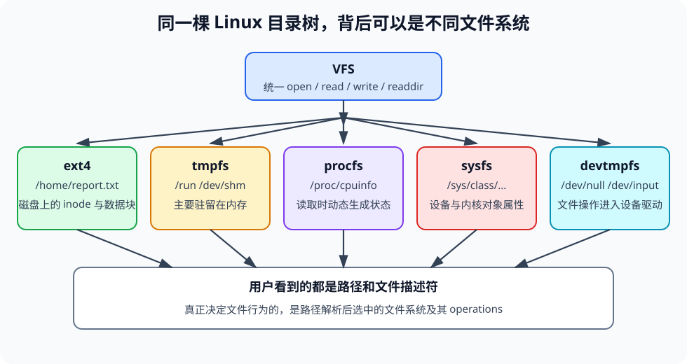
| 文件系统 | 常见挂载位置 | 读写文件时背后发生了什么 |
|---|---|---|
ext4 |
/、/home |
读写磁盘上的 inode 与数据块 |
tmpfs |
/run、/dev/shm |
数据直接保存在内存中，读写速度极快 |
procfs |
/proc |
读取时由内核实时查询进程或系统状态并拼成文本返回 |
sysfs |
/sys |
读取或修改内核对象、总线、驱动与硬件设备的属性 |
devtmpfs |
/dev |
读写请求直接转发给对应的设备驱动程序 |
从 VFS 的视角来看，一个“文件”的本质由三件事决定：
- 它在目录树里的名字（路径） ；
- 打开它之后允许执行的一组钩子操作（
getattr、readdir、read、write、readlink等） ； - 这些操作背后维护的状态 。
为什么把新功能设计成“文件接口”？¶
假设我们想给自己的文件系统加上“文件版本快照（Checkpoint）”和“相似文档检索（Vector Search）”两项新能力。一种做法是去改操作系统内核、发明新的系统调用（比如 sys_checkpoint_create 或 sys_vector_search），但这需要同时修改内核、C 标准库和所有用户态程序。
如果换一种思路， 用文件接口来表达这两项功能 呢？
1. CheckpointFS（控制文件 + 只读视图）：
用户工具向 /.checkpoint/control 写入一行命令
→ 文件系统收到 write 请求后，调用你实现的复制与硬链接函数完成版本保存或回滚
→ 用户直接 ls / cat /.checkpoints/<文件集合>/<版本ID> 查看历史版本
2. VectorFS（路径即查询 + 结果即软链接）：
用户直接执行 ls -l /.search/<查询词>/
→ 文件系统在 readdir / getattr / readlink 回调中动态计算文档相似度
→ 将排名前十的结果包装成指向 ../../documents/<原文档> 的虚拟软链接返回
你会发现，不需要发明任何新的系统调用，标准的 ls、cat、stat、readlink 命令就能直接驱动版本管理与向量检索！这正是附加题二（CheckpointFS）和附加题三（VectorFS）想要带你体验的系统设计思想：
- 基础实验 & 附加题一 ：解决“真实文件的数据和
inode怎么在磁盘上存取”； - 附加题二（CheckpointFS） ：组合你自己的文件复制与硬链接操作，体会 “独立
inode副本”与“共享inode硬链接” 在版本管理中的精妙配合； - 附加题三（VectorFS） ：实现与普通文件系统完全相同的标准 FUSE 回调（
getattr/readdir/readlink），把 实时计算出的搜索排名 动态映射为目录项与软链接。
2.0 附加题二、三环境准备¶
目录结构¶
在你的 fs/newfs 目录中，与附加题相关的文件布局如下（如果你的工作目录不叫 newfs，请替换为你的实际目录名）：
fs/newfs/
├── include/
│ └── newfs.h # 你自己的普通文件系统头文件（在这里声明 newfs_link 等扩展函数）
├── src/
│ ├── newfs.c # 你自己的普通文件系统实现（基础题 + 附加题一）
│ ├── checkpointfs.c # 附加题二的 4 个 TODO 函数
│ └── vectorfs.c # 附加题三的 4 个 TODO 函数
└── bonus/
├── include/
│ ├── bonus.h # 公共宏 CHECK(expr) 与路径规范化/解码工具声明
│ ├── checkpointfs.h # CheckpointFS 接口与路径生成工具 checkpointfs_path 声明
│ └── vectorfs.h # VectorFS 接口、缓存、向量计算与路径解析工具声明
├── src/ # FUSE 路由分发、控制会话、查询缓存与向量计算源码
├── tools/ # checkpointctl.py 与 searchpath.py 命令行辅助脚本
├── tests/ # 自动验收脚本 run_bonus.py
└── README.md # 工程内速查说明
辅助函数速查¶
为了让大家把精力集中在文件操作语义和 FUSE 回调本身，教师在 bonus/src/ 中已经写好了外围的路由分发与数学/编码工具。你的工作非常聚焦：
| 模块 | 教师已提供（直接调用，无需重造） | 学生需要完成（共 8 个 TODO 函数） |
|---|---|---|
| 底层基础 | main() 中的 bonus_register(&operations) 自动拦截特殊路径（/.checkpoint*、/.search），普通路径原样转交你的 newfs_* |
先在 src/newfs.c 中完成所选题目依赖的普通文件钩子（ 不要在 newfs_* 内部再去判断或转发附加题路径 ） |
| 附加题二 CheckpointFS |
1. 接收 /.checkpoint/control 的命令并解析参数2. 自动创建内部根存储目录 /.checkpointfs-data3. 路径生成工具 checkpointfs_path(...)4. 只读视图 /.checkpoints/... 的映射展示5. checkpointfs.c 中现成的 parent_path(...) 辅助函数 |
在 src/checkpointfs.c 中完成 4 个函数 ：1. static copy_file(source, target)2. checkpointfs_create(source, id)3. checkpointfs_copy(source, source_id, target_id)4. checkpointfs_restore(source, hist_id, new_id) |
| 附加题三 VectorFS |
1. 路径解析工具 vectorfs_parse_path(...)2. 递归加载文档与向量 vectorfs_load_documents(...)3. 向量编码 vectorfs_embed 与余弦相似度 vectorfs_similarity4. 按查询词缓存 vectorfs_cache_get（文件修改时自动清空缓存）5. 结果文件名与链接目标格式化 vectorfs_result_name / vectorfs_result_target |
在 src/vectorfs.c 中完成 4 个函数 ：1. vectorfs_search(query, results, count)2. vectorfs_getattr(path, st)3. vectorfs_readdir(path, buf, filler, offset, fi)4. vectorfs_readlink(path, buf, size) |
通用编程提示：巧用 CHECK(expr) 宏
bonus/include/bonus.h 中提供了一个非常顺手的错误检查宏：
#define CHECK(expr) do { \
int check_status = (expr); \
if (check_status < 0) return check_status; \
} while (0)
expr 求值一次；一旦发现返回值小于 0（即负的 errno 错误码），就会立刻从当前函数返回该错误码。
注意 ：如果当前已经动态分配了内存（如 vectorfs_parse_path 分配的 query 字符串或 vectorfs_load_documents 加载的文档数组）或创建了半成品文件需要清理，请用显式的 if (ret < 0) 先释放资源再返回，不要用 CHECK 直接跳过清理代码。
一键编译与自动测试方法¶
附加题与基础题在同一个工程内构建。完成所选题目的前置功能和对应的 TODO 后，在 仓库根目录 （/workspace）直接运行以下短命令即可：
# 只测附加题二（CheckpointFS）
bash fs/newfs/tests/test.sh checkpoint
# 只测附加题三（VectorFS）
bash fs/newfs/tests/test.sh vector
# 同时测普通扩展 + CheckpointFS + VectorFS
bash fs/newfs/tests/test.sh all
（如果你当前已经在 fs/newfs 目录下，也可以简写为 bash tests/test.sh checkpoint、vector 或 all。不带参数的 bash tests/test.sh 仍然保留基础实验原本的交互式评分流程。）
自动测试脚本为你做了什么：
- 自动编译与定位 ：自动调用 CMake 配置并编译当前工程，无需手动传入
--binary或--device参数。 - 安全隔离的测试盘 ：在
fs/newfs/tests/.lab5-test-*下自动创建独占的临时虚拟磁盘、挂载点和运行日志，完成真实挂载 → 功能验证 → 卸载 → 重新挂载持久化验证；测试结束或中途失败时会自动卸载并清理临时盘， 绝不会覆盖或擦除你自己的$HOME/ddriver默认磁盘 。 - 清晰的逐步定位 ：终端会用中文逐步打印
[步骤 X] 开始：...和pass/fail。如果某一步失败，脚本会立即停止并打印该步名称、失败原因、已通过步数以及文件系统的运行日志，方便你精准排查（注：打印的“共 X 步”代表功能验收进度，不是课程最终加分分值）。
如果你希望在自动测试之外，自己动手挂载文件系统、用 ls/cat/stat/readlink 直观观察现象，可以按下面两节中的交互步骤操作。
2. 附加题二：CheckpointFS¶
前置要求： 请先在附加题一中完成并验证 newfs 的普通文件创建（mknod）、目录创建（mkdir）、属性查询（getattr）、读写与截断（read/write/truncate）、文件删除（unlink）、 硬链接（link）与引用计数（nlink） ，以及卸载重挂载持久化。（本题不需要依赖 newfs_rename。）
2.1 背景与设计目标：怎样安全地保存和回滚文件？¶
在训练机器学习模型或修改重要配置文件时，我们经常需要“打个存档点（Checkpoint）”：
- 创建检查点（
create） ：把当前工作文件（比如/models/model.bin）保存为一个历史版本v0。之后我们继续训练并改写/models/model.bin，历史版本v0的内容必须保持原样、不被后续写入污染。 - 回滚检查点（
restore） ：假设训练跑崩了，我们想把/models/model.bin恢复到历史版本v0的状态，继续展开新一轮训练，并把这次新分支记为resumed。
这里有一个需要特别明确的设计问题： 恢复（restore）时，不能直接把工作路径 /models/model.bin 硬链接到历史版本 v0 的 inode 上？
不行！ 仔细想一想，checkpoint之所以成为checkpoint，是因为它反映了模型的一个历史版本，因为硬链接共享同一个 inode，如果直接让工作文件链接到 v0，那么恢复之后只要程序继续向 /models/model.bin 写数据，历史存档 v0 的内容就会被一并改写，历史就不再是历史了！
因此，CheckpointFS 采用了 “独立复制保存历史 + 复制新分支后硬链接切换” 的设计，对外提供两条控制命令：
create FILE ID
restore FILE HIST_CHECKPOINT NEW_CHECKPOINT
create FILE ID：将当前工作文件FILE完整复制为一份拥有 独立新inode和独立数据块 的检查点ID。restore FILE HIST_CHECKPOINT NEW_CHECKPOINT：- 先将同一
FILE集合下的历史检查点HIST_CHECKPOINT完整复制为一个 独立新inode的新检查点NEW_CHECKPOINT； - 再删除原工作路径
FILE（unlink），并将FILE硬链接（link）到新检查点NEW_CHECKPOINT上。
- 先将同一
2.2 独立历史与共享工作分支的 inode 关系¶
理解了上面的设计，我们就能非常清楚地画出 create 和 restore 之后的 inode 指向关系：
1. 执行 create /models/model.bin v0 之后：
工作路径 /models/model.bin → inode A（nlink = 1）
历史检查点 /.checkpoints/models__model.bin/v0 → inode B（nlink = 1，内容与 A 相同，但拥有独立数据块）
此时继续修改工作文件 /models/model.bin（比如把内容从 A 改成 B），改的只是 inode A；检查点 v0 指向的 inode B 毫发无损。
2. 执行 restore /models/model.bin v0 resumed 之后：
历史检查点 v0 → inode B（nlink = 1，始终保存着历史内容 A）
新检查点 resumed ─┐
├→ inode C（nlink = 2，从 v0 独立复制而来，与工作路径共享同一个 inode）
工作路径 model.bin ─┘
（原先的 inode A 因被 unlink 且 nlink 归零，已被回收）
请特别留意恢复后的这个状态：
- 工作路径与新检查点
resumed共享inode C（nlink = 2） ：它们代表当前正在推进的“新工作分支”。当你继续向工作路径/models/model.bin写入新内容C时，resumed看到的内容也会同步变成C； - 历史检查点
v0依然指向独立的inode B：无论工作文件怎么改写，v0都稳稳地保留着当初的历史内容A，未来随时可以从v0再次恢复出新的分支（如resumed_again）。
可以通过下面的分步交互图直观对比整个过程：
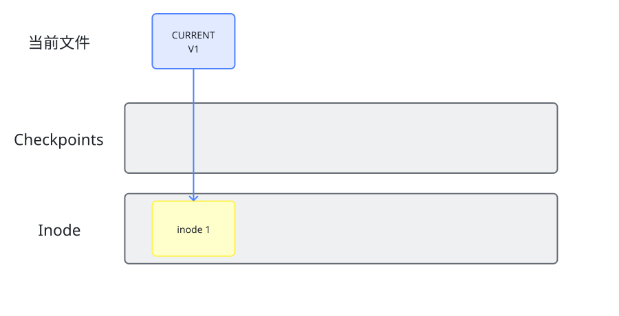
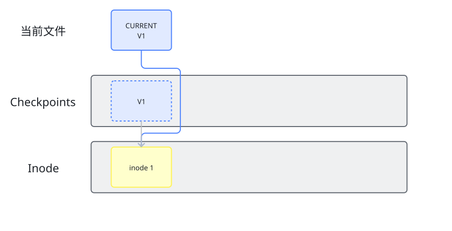
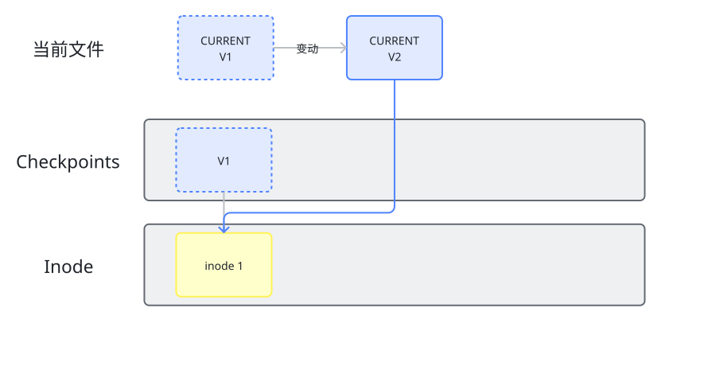
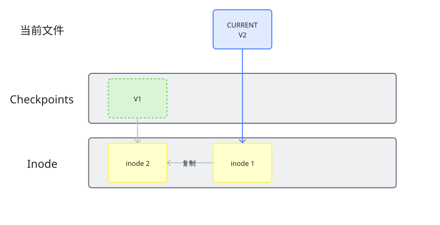
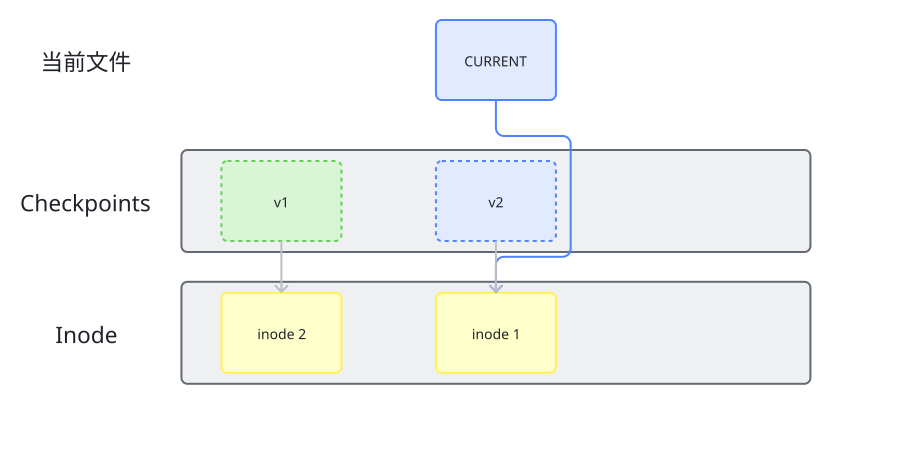
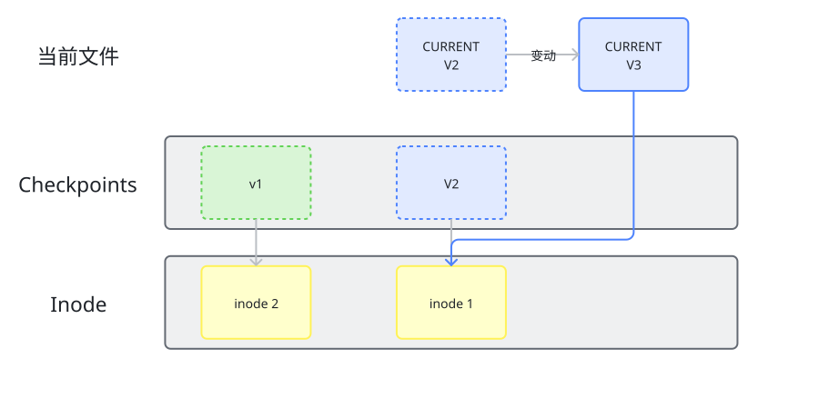
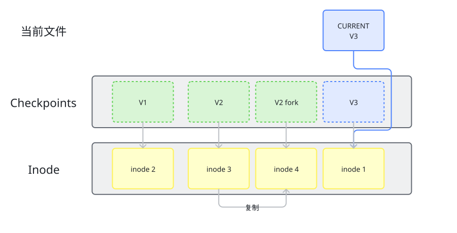
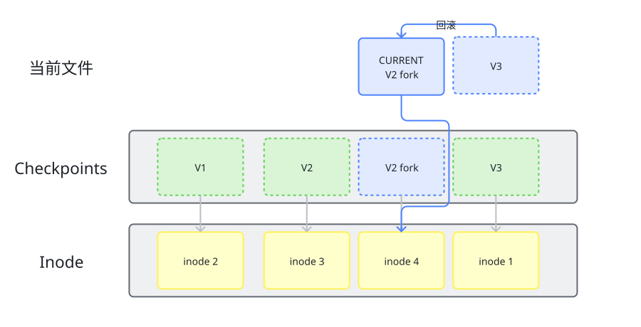
2.3 重要工具函数¶
为了减少工作量
在挂载后的文件系统中，与 CheckpointFS 相关的路径有三类：
| 挂载内路径示例 | 角色说明 | 谁来负责 |
|---|---|---|
/.checkpoint/control |
只写控制入口，checkpointctl.py 向它写入 create 或 restore 命令 |
教师已实现 ：解析命令后自动调用你的 checkpointfs_create 或 checkpointfs_restore |
/.checkpointfs-data/models__model.bin/v0 |
隐藏的真实存储路径 ：检查点文件真正保存在你 newfs 里的位置 |
教师预建根目录 /.checkpointfs-data； 你负责 创建子目录 models__model.bin 及里面的检查点文件 v0 |
/.checkpoints/models__model.bin/v0 |
公开只读视图 ：供用户在终端用 ls、stat、cat 查看检查点 |
教师已实现 ：自动将只读请求转发到上面的隐藏真实存储路径（不额外复制数据，也不增加 nlink） |
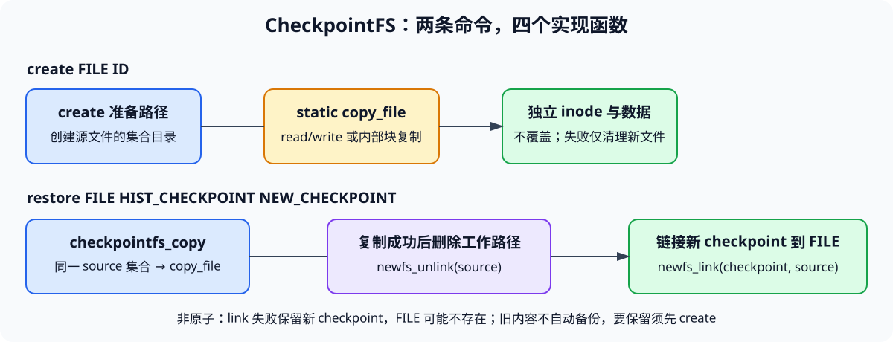
你 不需要 自己拼接 models__model.bin 这样的目录编码名！我们在 bonus/include/checkpointfs.h 中为你提供了现成的路径生成函数 checkpointfs_path，并在 src/checkpointfs.c 顶部提供了提取父目录的辅助函数 parent_path：
/* 1. 教师提供的检查点路径生成函数（声明于 bonus/include/checkpointfs.h） */
int checkpointfs_path(const char *file, const char *id, char *out, size_t capacity);
/* 2. 模板已提供的父目录提取函数（定义于 src/checkpointfs.c） */
static void parent_path(const char *path, char *parent);
调用示例（以工作文件 source = "/models/model.bin"、检查点 id = "v0" 为例）：
char target_path[CHECKPOINTFS_PATH_MAX];
char dir_path[CHECKPOINTFS_PATH_MAX];
/* 第一步：生成检查点的真实内部存储路径
* 若 source 或 id 非法，checkpointfs_path 会返回负错误码，用 CHECK 宏可直接拦截返回 */
CHECK(checkpointfs_path(source, id, target_path, sizeof(target_path)));
/* 此时 target_path 为 "/.checkpointfs-data/models__model.bin/v0" */
/* 第二步：如果需要该检查点所在的集合目录路径，直接调用 parent_path */
parent_path(target_path, dir_path);
/* 此时 dir_path 为 "/.checkpointfs-data/models__model.bin" */
关于 checkpointfs_path 的两个重要细节
checkpointfs_path只做字符串校验与路径拼装 ，不会访问磁盘，也不会替你创建目录或文件。- 第一个参数 永远传工作文件的路径
source（例如"/models/model.bin"），用于确定检查点所属的集合目录。哪怕是在checkpointfs_copy或checkpointfs_restore中定位已有的历史检查点，第一个参数也必须传工作文件路径source， 千万不要把隐藏的历史路径再传进checkpointfs_path。
2.4 四个待实现函数的分步指南¶
你需要编辑 fs/newfs/src/checkpointfs.c，按顺序完成以下 4 个函数 （它们会复用层层递进的逻辑）：
| 建议实现顺序 | 函数签名 | 一句话职责 |
|---|---|---|
| 第 1 步 | static int copy_file(const char *source, const char *target) |
将真实路径 source 的普通文件完整复制为真实路径 target 的独立新文件 |
| 第 2 步 | int checkpointfs_create(const char *source, const char *id) |
准备 source 对应的检查点集合目录，调用 copy_file 将工作文件保存为检查点 id |
| 第 3 步 | int checkpointfs_copy(const char *source, const char *source_id, const char *target_id) |
在同一 source 的检查点集合内，调用 copy_file 将 source_id 复制为新检查点 target_id |
| 第 4 步 | int checkpointfs_restore(const char *source, const char *hist_id, const char *new_id) |
先调用 checkpointfs_copy 将 hist_id 复制为 new_id，成功后 unlink(source) 再 link(new_id路径, source) |
下面给出每个函数的具体实现要点与边界处理说明：
copy_file¶
static int copy_file(const char *source, const char *target)
这是整个 CheckpointFS 的基石，只处理两个已经确定的真实路径（假设 target 的父目录已存在）：
- 检查源文件
source：调用newfs_getattr(source, &st)，确认源文件存在且是普通文件（S_ISREG(st.st_mode)；若为目录则返回-EISDIR）。 - 检查并排他创建目标文件
target：不能覆盖已有文件！先确认target不存在（或确保你的newfs_mknod(target, S_IFREG | 0644, 0)在文件已存在时返回-EEXIST）。 - 完整拷贝数据 ：
- 方法 A（推荐，最直观） ：循环调用你自己的
newfs_read和newfs_write（使用固定缓冲区如char buf[4096]，维护偏移量offset从0读到st.st_size）。需要struct fuse_file_info参数时，定义一个局部的struct fuse_file_info fi = {0};传入即可。注意处理空文件（st.st_size == 0时无需读写，直接成功）、不足一块的尾部字节，以及读写返回负值或0的异常情况。 - 方法 B ：直接在你自己的文件系统内部按数据块复制。
- 无论哪种方法，都必须保证
target拥有 独立的inode和独立的数据块 ，大小和内容与source完全一致。
- 方法 A（推荐，最直观） ：循环调用你自己的
- 失败清理 ：如果在创建了
target之后，读写拷贝过程中发生了错误，必须调用newfs_unlink(target)删除本次新建的半成品文件，再返回刚才的负错误码（ 注意：不要误删原本就已经存在的目标文件 ）。
checkpointfs_create¶
int checkpointfs_create(const char *source, const char *id)
对应命令 create FILE ID：
- 定义局部路径缓冲区，调用
checkpointfs_path(source, id, target_path, sizeof(target_path))得到检查点内部路径，再用parent_path(target_path, dir_path)得到该工作文件专属的集合目录路径。 - 按需创建集合目录 ：固定的内部根目录
CHECKPOINTFS_STORAGE_DIR（/.checkpointfs-data）已由教师控制层提前建好。你只需用newfs_getattr(dir_path, &st)检查dir_path是否存在：若返回-ENOENT，则调用newfs_mkdir(dir_path, 0755)创建它；若已存在但不是目录，返回-ENOTDIR。 - 调用
copy_file(source, target_path)完成独立复制并返回结果。
checkpointfs_copy¶
int checkpointfs_copy(const char *source, const char *source_id, const char *target_id)
这是一个供 restore 复用的公开 C 函数（注：命令行工具 checkpointctl.py 仍然只有 create 和 restore 两条子命令，没有单独的 copy 子命令）：
- 用同一个工作文件路径
source，分别调用两次checkpointfs_path：checkpointfs_path(source, source_id, src_ckpt_path, sizeof(src_ckpt_path))checkpointfs_path(source, target_id, dst_ckpt_path, sizeof(dst_ckpt_path))
- 直接调用
copy_file(src_ckpt_path, dst_ckpt_path)并返回结果（无需改动工作文件source）。
checkpointfs_restore¶
int checkpointfs_restore(const char *source, const char *hist_id, const char *new_id)
对应命令 restore FILE HIST_CHECKPOINT NEW_CHECKPOINT：
- 检查工作文件
source：调用newfs_getattr(source, &st)确认工作文件当前存在且是普通文件（若不存在或为目录则直接返回对应负错误码，不去创建新检查点）。 - 独立复制历史检查点 ：调用
checkpointfs_copy(source, hist_id, new_id)。- 如果
hist_id不存在，或者new_id已经存在，或者复制失败，这一步会直接返回错误，此时工作文件source保持原样不变 。 - 重要规则 ：哪怕当前工作文件
source已经和hist_id共享同一个inode，也 必须 执行这一步生成独立的新检查点new_id，不要写“同inode直接跳过返回”的捷径！
- 如果
- 切换工作路径硬链接 ：
- 先用
checkpointfs_path(source, new_id, new_ckpt_path, sizeof(new_ckpt_path))拿到新检查点的内部路径； - 调用
newfs_unlink(source)删除旧的工作路径目录项； - 再调用
newfs_link(new_ckpt_path, source)让工作路径成为新检查点的硬链接。 - （注：这里不需要实现原子事务、临时文件或
rename回滚；如果最后的newfs_link失败，直接返回错误码并保留刚才复制好的new_id即可。）
- 先用
2.5 实验验收¶
完成实现后，在学生仓库根目录运行以下脚本，即可进行 VectorFS 自动验收：
bash fs/newfs/tests/test.sh vector
若当前位于 fs/newfs/tests，直接运行 bash test.sh vector。脚本自动编译，并使用独立测试盘完成挂载、功能测试、重挂载和清理。
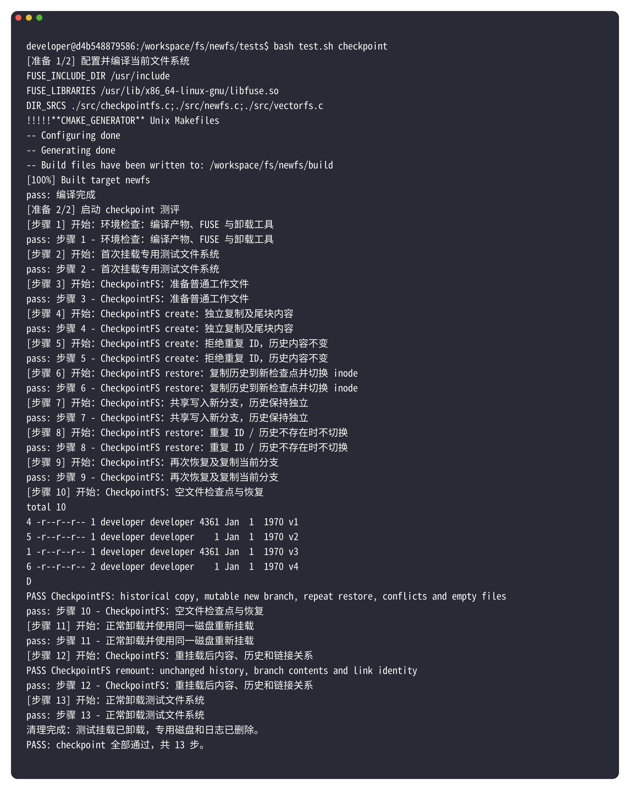
完成代码后，除了直接运行 bash fs/newfs/tests/test.sh checkpoint 进行自动验收外，你也可以在已挂载的文件系统（设挂载点为 $M）中执行以下命令，亲眼观察 inode 编号（%i）与硬链接计数（%h）的变化：
# 1. 创建工作文件并写入 "A"，保存为检查点 v0
mkdir -p "$M/models"
printf 'A\n' > "$M/models/model.bin"
python3 fs/newfs/bonus/tools/checkpointctl.py "$M" create /models/model.bin v0
stat -c '%i %h %n' "$M/models/model.bin" "$M/.checkpoints/models__model.bin/v0"
# 预期现象：两个文件的 inode 编号（第 1 列）不同，硬链接数（第 2 列）均为 1
# 2. 修改工作文件为 "B"，验证检查点 v0 不受影响，然后回滚到 v0（新分支命名为 resumed）
printf 'B\n' > "$M/models/model.bin"
cat "$M/.checkpoints/models__model.bin/v0" # 仍输出 A（独立副本）
python3 fs/newfs/bonus/tools/checkpointctl.py "$M" restore /models/model.bin v0 resumed
stat -c '%i %h %n' "$M/models/model.bin" "$M/.checkpoints/models__model.bin/resumed" "$M/.checkpoints/models__model.bin/v0"
# 预期现象：model.bin 与 resumed 的 inode 编号相同且硬链接数均为 2；v0 的 inode 编号与它们不同
cat "$M/models/model.bin" # 输出 A（刚才未保存的 B 已被丢弃）
# 3. 继续向工作文件写入 "C"，观察新分支与旧历史的区别
printf 'C\n' > "$M/models/model.bin"
cat "$M/.checkpoints/models__model.bin/resumed" # 输出 C（与工作文件共享 inode）
cat "$M/.checkpoints/models__model.bin/v0" # 仍输出 A（历史检查点不受影响）
# 4. 恢复前先显式 create 保存当前状态，再恢复到 v0，最后还能找回刚才保存的状态
python3 fs/newfs/bonus/tools/checkpointctl.py "$M" create /models/model.bin before_restore
python3 fs/newfs/bonus/tools/checkpointctl.py "$M" restore /models/model.bin v0 resumed_again
cat "$M/models/model.bin" # 输出 A
cat "$M/.checkpoints/models__model.bin/before_restore" # 输出 C（之前显式保存的内容）
python3 fs/newfs/bonus/tools/checkpointctl.py "$M" restore /models/model.bin before_restore recovered
cat "$M/models/model.bin" # 输出 C（成功从 before_restore 找回）
3. 附加题三：VectorFS¶
前置要求： 请先在附加题一中完成并验证 newfs 的普通文件读写（read/write/truncate）、目录遍历与属性查询（getattr/readdir）、卸载重挂载持久化，以及更新语料所需的删除（unlink）和重命名（rename）。 本题与附加题二（CheckpointFS）互不依赖，不需要先实现硬链接。
3.1 文件夹 as 查询，软链接 as 查询结果¶
在 Linux 系统中，你可能见过（或者现在去ls一下） /dev/disk/by-label/ 或 /dev/disk/by-uuid/ 这样的目录：它们并不是另一块硬盘，而是按卷标或 UUID 组织的“查找目录”，里面的每个目录项都是指向真实设备节点（如 ../../sdb1）的 软链接（符号链接，Symlink） ：
$ ls -l /dev/disk/by-label/DATA
lrwxrwxrwx 1 root root 10 Jan 1 00:00 /dev/disk/by-label/DATA -> ../../sdb1
注意这里的相对路径 ../../sdb1 是 相对于软链接自己所在的目录（/dev/disk/by-label/） 向上回退两级到达 /dev/，再指向 sdb1 的。用户只要访问这个路径，内核就会顺着软链接自动找到真正的设备。
VectorFS 把同样的思想用在了“文档相似度检索”上：
- 普通文档库（
/documents/**） ：用户像使用普通文件夹一样，在/documents及其子目录下创建、修改、移动或删除普通文本文件（例如/documents/fs.txt、/documents/os/inode.txt）。这些都是保存在你newfs里的真实文件。 - 动态查询目录（
/.search/<query>/） ：当用户访问/.search/<查询词>/时，不需要事先mkdir这个目录，文件系统会在 FUSE 回调中实时计算/documents下各文档与<查询词>的余弦相似度，选出排名前十（VECTORFS_TOP_K = 10）的文档。 - 动态结果软链接（
<score>__<rank>） ：查询目录中的每一项都表现为一个虚拟软链接，名字形如0.948683__01（6 位小数相似度 + 双下划线 + 从00开始的两位排名），软链接的目标指向../../documents/<文档相对路径>。
/.search/<query>/
├── 1.000000__00 -> ../../documents/a.txt
├── 0.948683__01 -> ../../documents/os/a.txt
└── 0.000000__02 -> ../../documents/b.txt
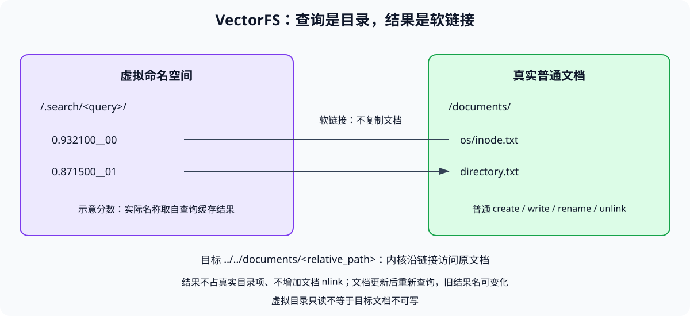
整个 /.search 下的目录和软链接都由你的 FUSE 回调函数在内存中即时生成， 不在磁盘上创建真实的目录或软链接 inode 。而当用户执行 cat /.search/<query>/1.000000__00 时，内核先通过你的 vectorfs_readlink 拿到目标路径 ../../documents/a.txt，解析出 /documents/a.txt 后，再自动调用你自己的 newfs_read 读取原文档内容！
3.2 工具函数（直接调用）¶
为了让你专注于检索排序和三个标准 FUSE 回调，我们在 bonus/include/vectorfs.h 中提供了完整的支撑工具链。动手写代码前，请先熟悉这三组工具的用法，否则你的工作量会 极大上升：
工具组一：文档加载与向量相似度计算（供 vectorfs_search 使用）¶
/* 文档结构体：由 vectorfs_load_documents 生成 */
struct vectorfs_document {
const char *name; /* 文件基名，如 "inode.txt" */
const char *relative_path; /* 相对于 /documents 的路径，如 "os/inode.txt"（无前导斜杠） */
float embedding[VECTORFS_DIMENSION]; /* 教师已为你算好的 8 维归一化文档向量 */
};
/* 1. 递归遍历你 newfs 中的 /documents 目录，加载所有普通文档及其向量 */
int vectorfs_load_documents(struct vectorfs_document **out, size_t *count);
/* 2. 用完文档列表后，统一释放内存（千万不要单独 free 里面的字段） */
void vectorfs_documents_free(struct vectorfs_document *documents, size_t count);
/* 3. 将一段字节（如 query 字符串）编码为 8 维归一化向量 */
int vectorfs_embed(const char *text, size_t length, float out[VECTORFS_DIMENSION]);
/* 4. 计算两个 8 维向量的余弦相似度，返回值在 [-1.0, 1.0] 之间 */
double vectorfs_similarity(const float a[VECTORFS_DIMENSION], const float b[VECTORFS_DIMENSION]);
调用范例：
struct vectorfs_document *docs = NULL;
size_t doc_count = 0;
CHECK(vectorfs_load_documents(&docs, &doc_count));
float query_vec[VECTORFS_DIMENSION];
int ret = vectorfs_embed(query, strlen(query), query_vec);
if (ret < 0) {
vectorfs_documents_free(docs, doc_count);
return ret;
}
for (size_t i = 0; i < doc_count; ++i) {
double score = vectorfs_similarity(query_vec, docs[i].embedding);
/* docs[i].relative_path 就是该文档的相对路径，如 "os/inode.txt" */
}
/* 函数返回前务必释放文档列表！ */
vectorfs_documents_free(docs, doc_count);
工具组二：搜索路径解析（供 getattr / readdir / readlink 使用）¶
FUSE 传给回调函数的 path 是形如 "/.search"、"/.search/file%20system" 或 "/.search/file%20system/1.000000__00" 的完整路径。直接调用 vectorfs_parse_path 即可完成路径分类、百分号解码（把 %20 还原为空格）以及分数/排名提取：
#include <stdlib.h> /* 使用 free() */
char *query = NULL;
double rate = 0;
size_t rank = 0;
int kind = vectorfs_parse_path(path, &query, &rate, &rank);
if (kind < 0) {
return kind; /* 路径格式非法或不属于 /.search，直接返回负错误码 */
}
/* kind 的三种非负返回值：
* kind == 0 : 搜索根目录 "/.search"（此时 query 为 NULL，rate 和 rank 为 0）
* kind == 1 : 查询目录 "/.search/<query>"（此时 query 为新分配的已解码字符串）
* kind == 2 : 结果软链接 "/.search/<query>/<rate>__<rank>"（query、rate、rank 均有效）
*/
/* ... 在这里根据 kind 执行目录或结果项逻辑 ... */
free(query); /* 重要：后续所有返回分支（包括报错返回）都必须调用 free(query)；当 query 为 NULL 时 free(NULL) 也是安全的 */
路径解析的两个易错点
解析成功不等于该结果真的存在 ：vectorfs_parse_path 只是从路径字符串里拆出了数字 rate 和 rank。用户完全可能随便输入一个不存在的路径（比如 ls /.search/a/0.123456__08），你必须通过下面的缓存查询核对第 rank 名是否真的存在、且格式化后的名字是否与之一致。 (不 防御性编程 也不会出问题啦……)
工具组三：查询缓存与结果格式化（供 getattr / readdir / readlink 使用）¶
当你在终端执行一次 ls -l /.search/a 时，FUSE 会先调用 readdir 列出目录项，紧接着对每个目录项调用 getattr 和 readlink。为了避免同一个查询词在一次命令里被重复搜索十几次，教师提供了按查询词缓存的 vectorfs_cache_get 以及格式化工具：
/* 搜索结果项结构体（定义于 bonus/include/vectorfs.h） */
struct vectorfs_result {
char source[VECTORFS_TARGET_MAX]; /* /documents 下的相对路径，如 "os/a.txt" */
double rate; /* 原始余弦相似度 */
size_t rank; /* 从 0 开始的排名（0 .. count-1） */
};
/* 1. 按已解码的 query 获取缓存结果；若缓存未命中，内部会自动调用你写的 vectorfs_search */
int vectorfs_cache_get(const char *query, const struct vectorfs_result **results, size_t *count);
/* 2. 将单个结果格式化为目录项名称（如 "0.948683__01"），成功返回 0 */
int vectorfs_result_name(const struct vectorfs_result *result, char *out, size_t capacity);
/* 3. 将单个结果格式化为软链接目标路径（如 "../../documents/os/a.txt"），成功返回 0 */
int vectorfs_result_target(const struct vectorfs_result *result, char *out, size_t capacity);
在回调函数中借用缓存并核对第 rank 项的标准写法：
const struct vectorfs_result *results = NULL;
size_t count = 0;
int ret = vectorfs_cache_get(query, &results, &count);
if (ret < 0) {
free(query);
return ret;
}
/* 注意：results 指向教师缓存内部维护的数组，只读借用即可，千万不要修改或 free(results)！
* 当普通文件发生写入、删除、改名或卸载时，教师路由层会自动调用 vectorfs_cache_clear() 清空缓存。 */
当 kind == 2（访问具体某个结果项 <rate>__<rank>）时，怎样验证路径里的 rate 和 rank 确实匹配缓存中的真实结果？只需两步：
- 检查下标是否越界：若
rank >= count，说明没有这个排名的结果，释放query后返回-ENOENT； - 核对格式化后的名称是否一致：
vectorfs_parse_path已经保证路径末尾符合%.6f__%02zu格式。你可以用vectorfs_result_name(&results[rank], expected_name, sizeof(expected_name))生成第rank名的标准名称，再和根据路径rate/rank格式化出的名称（或判断snprintf格式化rate后的 6 位小数）比对；若不一致，说明用户输入的分数与实际第rank名的分数不符，返回-ENOENT。
3.3 待实现函数的分步指南¶
你需要编辑 fs/newfs/src/vectorfs.c，完成以下 4 个函数 （1 个搜索计算函数 + 3 个标准 FUSE 回调）：
vectorfs¶
int vectorfs_search(const char *query, struct vectorfs_result results[VECTORFS_TOP_K], size_t *count)
当 vectorfs_cache_get 发现某个 query 尚未缓存时，会为你预分配好一个容量为 VECTORFS_TOP_K（10）的 results 数组传进来，调用本函数计算排名：
- 调用
vectorfs_load_documents(&docs, &doc_count)加载全部普通文档。如果doc_count == 0（没有文档或/documents目录尚不存在），直接令*count = 0、释放docs并返回0。 - 调用
vectorfs_embed(query, strlen(query), query_vec)计算查询词的 8 维向量。 - 遍历所有文档，用
vectorfs_similarity(query_vec, docs[i].embedding)计算每个文档的得分，并把每个文档的relative_path与得分rate配对保存（例如保存在你自己的临时结构体数组中）。 - 排序规则 ：
- 第一关键字：按相似度
rate降序 排列（分高者在前）； - 第二关键字（同分平局时）：按文档相对路径
source的字典序（strcmp） 升序 排列。
- 第一关键字：按相似度
- 填写输出 ：取前
k = min(doc_count, VECTORFS_TOP_K)项填入传入的results[0 .. k-1]：- 将文档的
relative_path拷贝到results[i].source（必须用strcpy/snprintf拷贝字符串内容，因为下一步就要释放docs了！）； results[i].rate = 相似度；results[i].rank = i（从0开始：0, 1, ..., k-1）；- 令
*count = k。
- 将文档的
- 调用
vectorfs_documents_free(docs, doc_count)释放文档列表（如果中间自己malloc了临时排序数组也一并free）， 不要free(results)，最后返回0。
vectorfs_getattr¶
int vectorfs_getattr(const char *path, struct stat *st)
与你写过的 newfs_getattr 签名完全一样，先 memset(st, 0, sizeof(*st)) 清零结构体，再用 vectorfs_parse_path(path, &query, &rate, &rank) 解析路径：
- 当
kind == 0（/.search）或kind == 1（/.search/<query>）时 ：- 它们都是只读虚拟目录， 不需要触发搜索 ！
- 直接设置
st->st_mode = S_IFDIR | 0555; st->st_nlink = 2;，释放query后返回0。
- 当
kind == 2（/.search/<query>/<rate>__<rank>）时 ：- 调用
vectorfs_cache_get(query, &results, &count)获取该查询的结果数组； - 检查
rank < count且results[rank]的 6 位小数分数与路径中的rate完全一致（不一致则free(query)并返回-ENOENT）； - 调用
vectorfs_result_target(&results[rank], target, sizeof(target))生成软链接目标路径"../../documents/<source>"； - 设置软链接属性：
st->st_mode = S_IFLNK | 0777; st->st_nlink = 1; st->st_size = strlen(target);（ 注意：软链接的st_size是目标路径字符串的长度，不是原文档的大小！ ），释放query后返回0。
- 调用
vectorfs_readdir¶
int vectorfs_readdir(const char *path, void *buf, fuse_fill_dir_t filler, off_t offset, struct fuse_file_info *fi)
与 newfs_readdir 一样，通过调用 filler(buf, name, NULL, next_offset) 向 FUSE 填充目录项：
- 若
offset < 0返回-EINVAL。调用vectorfs_parse_path解析路径：若kind == 2（结果软链接不是目录），释放query后返回-ENOTDIR。 - 当
kind == 0（搜索根目录/.search）时 ：- 搜索根目录不保存历史查询记录，只列出
"."和".."两个目录项（注意遵守offset：第 0 项是"."，next_offset传1；第 1 项是".."，next_offset传2）。
- 搜索根目录不保存历史查询记录，只列出
- 当
kind == 1（查询目录/.search/<query>）时 ：- 调用
vectorfs_cache_get(query, &results, &count)拿到前count个结果； - 目录项依次为：下标
0是"."，下标1是".."，下标2 .. count+1对应results[0 .. count-1]（用vectorfs_result_name(&results[i], name, sizeof(name))生成目录项名）； - 从
offset对应的位置开始依次调用filler(buf, name, NULL, 当前目录项位置 + 1)；如果某次filler(...)返回非零值（表示 FUSE 缓冲区已满），立即停止循环，释放query并返回0（成功）。
- 调用
vectorfs_readlink¶
int vectorfs_readlink(const char *path, char *buf, size_t size)
当用户执行 readlink、ls -l 或 cat 结果软链接时，FUSE 调用此函数获取软链接指向的目标路径字符串：
- 若
!buf || size == 0返回-EINVAL。 - 调用
vectorfs_parse_path解析路径：若kind == 0或kind == 1（目录不是软链接），释放query后返回-EINVAL。 - 调用
vectorfs_cache_get(query, &results, &count)，同样检查rank < count且第rank项分数与路径中的rate匹配（不匹配则释放query并返回-ENOENT）。 - 调用
vectorfs_result_target(&results[rank], target, sizeof(target))得到"../../documents/<source>"。 - 按 FUSE2
readlink规范，将target拷贝到调用者缓冲区buf中： 最多拷贝size - 1个字节，并在末尾补'\0'（即使发生截断也返回0表示成功，不要返回拷贝的字节数，也不要去读原文档的内容）。释放query后返回0。
3.4 一张表对照普通 newfs 与 VectorFS 回调¶
| 标准 FUSE2 回调 | 你在普通 newfs 中怎么做 |
你在 VectorFS 中怎么做 |
|---|---|---|
getattr(path, st) |
从磁盘/内存 inode 读取属性填入 st |
搜索根/查询目录填 S_IFDIR \| 0555；结果项从 vectorfs_cache_get 核对后填 S_IFLNK \| 0777，st_size 填链接目标路径的字节长度 |
readdir(path, buf, filler, offset, fi) |
遍历目录的真实 dentry 调用 filler |
搜索根只列 . 和 ..；查询目录先列 .、..，再遍历缓存结果用 vectorfs_result_name 生成名字调用 filler |
readlink(path, buf, size) |
读取保存的链接目标路径写入 buf |
从缓存核对结果后，用 vectorfs_result_target 生成 "../../documents/<source>" 写入 buf（最多 size - 1 字节加 '\0'），返回 0 |
我们居然用了相同的接口来实现了一个完全不同的功能！太神奇了，文件系统……
3.5 实验验收¶
完成实现后，在学生仓库根目录运行以下脚本，即可进行 VectorFS 自动验收：
bash fs/newfs/tests/test.sh vector
若当前位于 fs/newfs/tests，直接运行 bash test.sh vector。脚本自动编译，并使用独立测试盘完成挂载、功能测试、重挂载和清理。
以下为实际学生终端的完整运行结果，13 步全部通过：
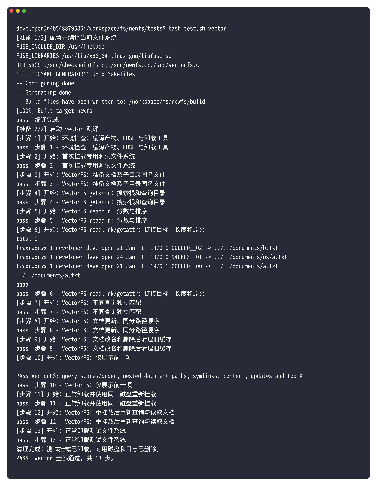
3.6 自主体验：从文本到路径，再读到原文¶
本节及下一节供自行观察、调试与理解实现，不是额外验收要求；正式验收使用 3.5 的测试脚本。
下面我们用两个终端亲自在 Shell 里操作自己的文件系统，直观感受“路径即查询、结果即软链接”。所有命令均在实验 Docker 容器内执行。
终端 A：编译并前台挂载。 从仓库根目录 /workspace 开始，创建一个专用的体验目录 vectorfs-experience（若该目录已存在，第一条 test ! -e 会自动停止以避免覆盖旧数据；如需重做，可换个目录名或卸载后删除旧目录）：
cd /workspace
cmake --build fs/newfs/build -j"$(nproc)" && (
set -e
test ! -e vectorfs-experience
mkdir -p vectorfs-experience/mnt
fs/newfs/build/newfs --device="$PWD/vectorfs-experience/disk" \
-f -s -o use_ino,attr_timeout=0,entry_timeout=0,negative_timeout=0 \
"$PWD/vectorfs-experience/mnt"
)
挂载成功后，因为加了 -f（前台运行）， 终端 A 会保持运行状态，这不是卡死 。请保持终端 A 打开，不要按 Ctrl+C，也不要在终端 A 里继续输命令。
终端 B：进入同一个容器操作文件系统。 在宿主机另开一个终端窗口，进入容器：
docker exec -it lab5-student bash
（若你的容器名称不是 lab5-student，请替换为实际容器名。）进入容器后设置挂载点变量并确认挂载成功：
cd /workspace
M="$PWD/vectorfs-experience/mnt"
SEARCH=fs/newfs/bonus/tools/searchpath.py
mountpoint "$M" # 应输出 is a mountpoint；若不是，请先回终端 A 检查挂载是否报错
确认挂载成功后，在 /documents 下写入三份普通文档：
mkdir -p "$M/documents/os"
printf '%s' 'file system' > "$M/documents/fs.txt"
printf '%s' 'file system inode' > "$M/documents/os/inode.txt"
printf '%s' 'process scheduler' > "$M/documents/process.txt"
ls -R "$M/documents"
（这里使用 printf '%s' 而不是 echo，是为了不在末尾附加换行符 \n——换行符也是字节，同样会参与分桶计数。）
发起第一次查询：file system
Q=$(python3 "$SEARCH" "$M" 'file system')
printf '%s\n' "$Q"
ls -l "$Q"
searchpath.py 只是一个帮你把空格编码成 %20 的小工具，输出的 Q 是 /workspace/vectorfs-experience/mnt/.search/file%20system。当你执行 ls -l "$Q" 时，才真正触发了你的 vectorfs_readdir、vectorfs_getattr 和 vectorfs_readlink！（你也可以直接手敲 ls -l "$M/.search/file%20system"，效果完全一样。）
此时会看到三个结果软链接（注意：ls 默认按文件名字典序显示，所以分值小的可能排在屏幕上方； 请看文件名末尾的 __00、__01、__02 来识别第 1、2、3 名 ）：
rank（从 0 开始） |
结果软链接名称 | readlink 返回的目标路径 |
|---|---|---|
| 0（第一名） | 1.000000__00 |
../../documents/fs.txt |
| 1（第二名） | 0.973279__01 |
../../documents/os/inode.txt |
| 2（第三名） | 0.787242__02 |
../../documents/process.txt |
通过通配符 *__00 直接读取第一名，无需手抄分数：
readlink "$Q"/*__00
cat "$Q"/*__00
printf '\n'
输出为：
../../documents/fs.txt
file system
注意通配符 *__00 要写在引号外面，让 Shell 自动匹配后缀为 __00 的第一名文件。cat 会顺着相对软链接 ../../documents/fs.txt 回退到挂载根并进入 documents/fs.txt，最终调用你的 newfs_read 读出原文！
换一个查询词：process scheduler
Q2=$(python3 "$SEARCH" "$M" 'process scheduler')
readlink "$Q2"/*__00
cat "$Q2"/*__00
printf '\n'
输出为：
../../documents/process.txt
process scheduler
关于演示编码器的说明：为什么它不是语义大模型？
为了保证实验在离线容器中零依赖、可确定性复现，教师提供的 vectorfs_embed 采用的是 字节模 8 分桶计数 + L2 归一化 的教学算法，并非自然语言神经网络模型。它只统计字节分布，不理解英语词义，得分也不是概率。下面的手算小样本能帮你更精确地验证排序、同名子目录区分和缓存刷新逻辑。
3.7 自主体验：手算分数、同分排序与修改文档后的动态更新¶
第一步：用可手算的极简样本检验分数与同名文件区分。 接着上面的实验环境，删掉刚才的三个示例文件，换上三个内容只有 a 和 b 的文件：
rm "$M/documents/fs.txt" "$M/documents/os/inode.txt" "$M/documents/process.txt"
printf '%s' 'aaaa' > "$M/documents/a.txt"
printf '%s' 'aaab' > "$M/documents/os/a.txt"
printf '%s' 'bbbb' > "$M/documents/b.txt"
Qa=$(python3 "$SEARCH" "$M" 'a')
Qb=$(python3 "$SEARCH" "$M" 'b')
ls -l "$Qa"
ls -l "$Qb"
因为字符 'a'（ASCII 97，97 % 8 = 1）和 'b'（ASCII 98，98 % 8 = 2）落在不同的分桶里，我们可以直接手算出余弦相似度，结果应当严格如下：
rank（从 0 开始） |
查询 a：结果名称 → 指向文档 |
查询 b：结果名称 → 指向文档 |
|---|---|---|
| 0 | 1.000000__00 → a.txt |
1.000000__00 → b.txt |
| 1 | 0.948683__01 → os/a.txt |
0.316228__01 → os/a.txt |
| 2 | 0.000000__02 → b.txt |
0.000000__02 → a.txt |
这里同时验证了两个关键细节：
a.txt和os/a.txt的文件名（basename）都叫a.txt，但相对路径不同，所以struct vectorfs_result.source中必须保存相对于/documents的完整相对路径（os/a.txt），不能只存文件名。- 相似度为
0.000000的文档也会正常列出（只要文档总数不超过VECTORFS_TOP_K10 个，就全部返回，不设额外分数门槛）。
readlink "$Qa"/*__00 # 输出 ../../documents/a.txt
cat "$Qa"/*__00 # 输出 aaaa
printf '\n'
readlink "$Qb"/*__00 # 输出 ../../documents/b.txt
第二步：修改文档内容，验证缓存自动失效与同分字典序排序。
现在把 /documents/a.txt 的内容也改成 'bbbb'，然后直接重新查看刚才的查询路径 $Qb：
printf '%s' 'bbbb' > "$M/documents/a.txt"
ls -l "$Qb"
readlink "$Qb"/*__00
cat "$Qb"/*__00
printf '\n'
此时 a.txt 和 b.txt 与查询 'b' 的相似度都是满分 1.000000。按照 “同分按相对路径 source 字典序升序” 规则，"a.txt" < "b.txt"，所以第一名（__00）应该立刻变成 a.txt，第二名（__01）变成 b.txt：
../../documents/a.txt
bbbb
- 如果修改后第一名还是
b.txt，请检查：① 你的回调是否通过vectorfs_cache_get获取结果；②vectorfs_search中是否每次都调用vectorfs_load_documents重新读取最新文档；③ 挂载时是否加上了-o attr_timeout=0,entry_timeout=0,negative_timeout=0关闭内核元数据缓存。 - 如果分数对了但指向的文档不对，请检查排序时有没有把
source路径和rate分数绑在一起移动。
第三步：卸载并观察重挂载后的持久化。 在终端 B 中执行卸载，终端 A 的前台进程会自动正常退出：
cd /workspace
fusermount -u "$M"
如果想验证重挂载后依然能正常检索，在终端 A 用相同的虚拟磁盘路径重新挂载：
cd /workspace
fs/newfs/build/newfs --device="$PWD/vectorfs-experience/disk" \
-f -s -o use_ino,attr_timeout=0,entry_timeout=0,negative_timeout=0 \
"$PWD/vectorfs-experience/mnt"
再到终端 B 执行 readlink "$Qb"/*__00 和 cat "$Qb"/*__00，依然能够读到修改后的 ../../documents/a.txt 和 bbbb。体验完毕后再次执行 fusermount -u "$M" 即可。
4. 附加题四：在自制 FS 上训练简单模型¶
前置要求： 完成附加题一中的普通文件读写、重挂载持久化和支持至少 1MB 的单文件容量扩展； 不要求先完成 CheckpointFS 或 VectorFS 。
4.1 概述¶
演示视频：
- Bonus-在自制 FS 上训练简单模型：https://www.bilibili.com/video/BV13dCsBPEij/?share_source=copy_web&vd_source=a822dcda3537564ccdd0bb45aa0afe33
这是一个非常能体现文件系统完成度的综合性实验。当你真正把它跑通时，会直观地感受到：前面亲手编写的目录管理、inode、数据块分配、读写接口和持久化逻辑，已经不再只是为了应付几条简单的测试命令，而是真正支撑起了一个真实的机器学习训练负载！
为什么推荐尝试这个实验？
如果 PyTorch 训练脚本能够直接在你的文件系统上切分并读取 MNIST 数据集、持续保存更新模型权重 model.pth，并且在卸载重挂载后依然能加载模型继续训练或评估，说明你的文件系统已经串成了一套扎实、可靠的存储系统。
训练结束后，挂载点下会生成如下目录结构：
mnt
├── model
│ └── model.pth
└── trimmed
├── scaled_mnist_test_0.pt
├── ...
├── scaled_mnist_test_9.pt
├── scaled_mnist_train_0.pt
├── ...
└── scaled_mnist_train_9.pt
3 directories, 21 files
切换分支前请务必先保存当前代码！
本题需要切换到仓库的 model 分支。执行 git checkout model 前，请先用 git commit、git stash 或备份文件夹的方式保存好你在当前分支编写的 newfs（及附加题一/二/三）代码，避免切换分支时丢失修改。
运行环境提醒
- 本部分需要 Python + PyTorch 环境，PyTorch 安装可参考 PyTorch 官网指南。
- 由于虚拟磁盘和数据集占用空间较大， 请不要在学校共享远程计算节点上运行本题 ，建议在个人电脑或本地容器环境中完成。
4.2 任务要求与容量分析¶
在训练过程中，脚本会从 MNIST 数据集中随机抽取子集并按数字类别（0～9）切分为训练集与测试集各 10 个文件，存放在 trimmed/ 目录下（格式为 scaled_mnist_{train/test}_{0-9}.pt），同时在 model/ 目录下创建并反复覆写模型参数文件 model.pth。
这对你的文件系统提出了四项具体要求：
- 稳定读取大文件 ：
trimmed/下的单个数据文件最大接近1MB，训练与评估过程中会被反复读取； - 持续覆写更新文件 ：
model/model.pth大小约为几十 KB，每个 epoch 后都会重新写入更新； - 支持至少
1MB的单文件容量 ：这是跑通本题最核心的门槛； - 卸载重挂载后数据完好 ：重新挂载后仍能直接运行评估脚本
eval.sh或继续训练。
如何让文件支持 1MB 以上的容量？——间接块（Indirect Block）原理
如果你在任务二中设计的 inode 只有少量直接块指针（比如逻辑块大小为 1KB，inode 中只有 6 个直接块指针），那么单个文件最大只能存 6KB，放不下接近 1MB 的 .pt 数据集文件。
在经典 EXT2 文件系统中，解决方案是引入 间接块指针 ：如果逻辑块大小是 1KB（1024 字节），每个块号指针占 4B，那么一个一级间接块就能存放：
1024 / 4 = 256 个数据块指针（额外提供 256KB 容量）
只需增加几个一级间接块指针，或者引入一个二级间接块指针（256 × 256KB = 64MB），就能轻松突破 1MB 的单文件限制！
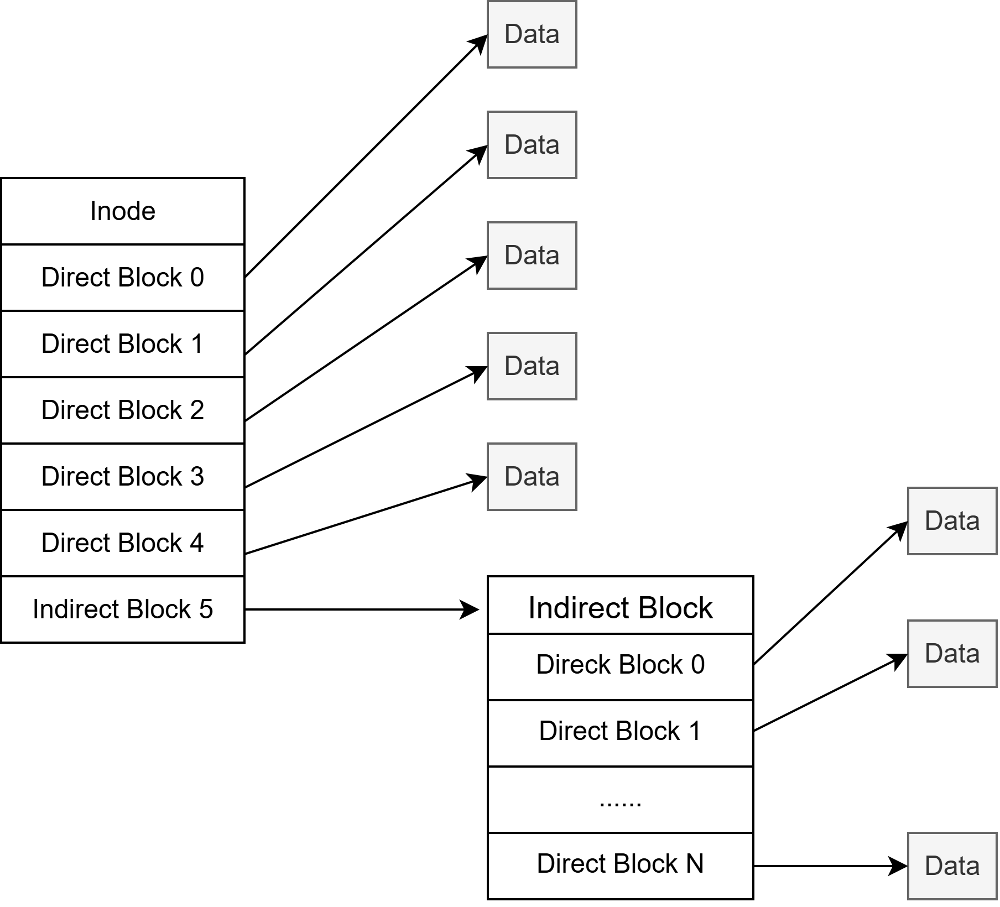
4.3 实验步骤与性能优化建议¶
-
保存当前工作后切换到
model分支 ：git checkout model -
重新运行
./setenv.sh生成工程 ，并将你已经实现的普通文件读写、持久化及大文件扩展代码迁移过来。- 与主分支相比，
model分支将虚拟磁盘容量扩大到了80MB，并在tests/目录下提供了训练脚本train.sh、评估脚本eval.sh以及训练源码mtrain/。
- 与主分支相比，
- 运行训练与测试 ：
- 首次运行时必须先执行
train.sh，它会自动切分数据集并写入你的文件系统，随后开始训练； - 训练完成后，可多次运行
train.sh观察增量训练，或运行eval.sh测试模型准确率；最后验证卸载重挂载后数据是否保留。
- 首次运行时必须先执行
在实现单文件 1MB+ 容量时，通常有两种选择：
- 方案一（快速验证） ：直接扩大每个
inode的预分配空间或直接块数组上限到1MB～2MB。这种改法最简单，能最快看到训练跑通；但由于虚拟磁盘扩大到了80MB，如果你在卸载（destroy）时采取“不论是否修改、把所有预分配块全部刷回磁盘”的策略，卸载过程可能会非常慢（甚至出现终端看似已卸载，但 VSCode 调试进程还在后台苦苦刷盘好几分钟的现象）。 - 方案二（推荐，更贴近真实系统） ：在
inode中引入一级/二级间接块，并结合 按需分配 与dirty脏页标记 （只在文件或inode真正被修改过时才在卸载阶段写回磁盘），这样无论空间利用率还是卸载速度都会非常理想。
下面是修改了 sfs 后的一个运行结果示意。这里采用的是较直接的一种做法：仅将预分配空间提高到 2MB，然后运行训练脚本。
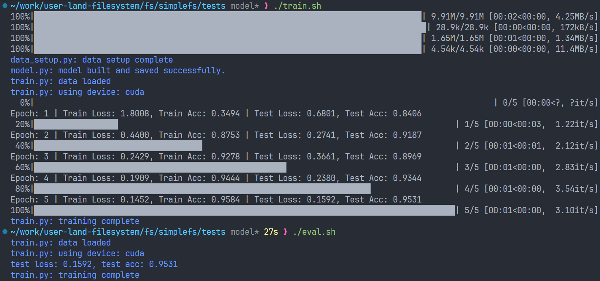
可以看到，模型已经能够顺利完成训练。更重要的是，在文件系统卸载并重新挂载之后，之前训练得到的模型参数和写入的数据仍然应该保留下来；如果这一点也成立，就说明你的文件系统已经能够支撑这组训练脚本所需要的读写与持久化流程了。
5. 附加题常见问题排查（FAQ）¶
5.1 挂载后能看到 /.checkpoint 或 /.search，为什么操作时报错 Function not implemented (ENOSYS)？¶
教师的路由层（bonus_register）已经把特殊路径接好了，但 src/checkpointfs.c 和 src/vectorfs.c 里的 8 个学生练习函数初始都写着 return -ENOSYS;。同理，src/newfs.c 里的 newfs_read 初始也返回 -ENOSYS。
排查方法：
- 先确认你所选题目对应的函数是否已经编写完成并重新编译（
cmake --build fs/newfs/build）； - 如果普通文件读写或硬链接报错
ENOSYS，请检查src/newfs.c顶部的operations结构体，确认.write、.truncate、.unlink、.link等指针是否已经从NULL改成了你自己的函数名！
5.2 在 CheckpointFS 中执行 restore 后，为什么继续写工作文件会改变新检查点，而历史检查点不变？¶
这是预期行为，也是本题想要展示的核心语义：restore FILE HIST_CHECKPOINT NEW_CHECKPOINT 先把 HIST_CHECKPOINT 独立复制 到 NEW_CHECKPOINT，然后让工作文件 FILE 通过 硬链接 与 NEW_CHECKPOINT 共享同一个 inode。
因为硬链接共享同一个底层 inode（没有自动写时复制 Copy-on-Write），所以继续向工作文件写数据，自然会同步体现在代表当前活跃分支的 NEW_CHECKPOINT 中；而当初的 HIST_CHECKPOINT 指向的是另一个独立的 inode，所以历史内容永远不会被改写。
（注：/.checkpoints/ 下的只读视图只是禁止用户直接通过 /.checkpoints/... 路径打开文件写入，并不阻碍底层共享 inode 随工作路径更新。若想在 restore 前保留未保存的工作内容，请先执行一次 create。）
5.3 在 VectorFS 中，为什么 getattr、readdir 和 readlink 都要调 vectorfs_cache_get？¶
当用户执行 ls -l /.search/a 时，内核会依次调用一次 readdir、多次 getattr 和多次 readlink。如果这三个回调函数都调用 vectorfs_cache_get(query, &results, &count)：
- 第一次调用（比如
readdir）未命中缓存时，教师缓存会自动调用你写的vectorfs_search算好前 10 名并存入缓存； - 紧接着的
getattr和readlink再次调用vectorfs_cache_get时，就会直接命中缓存、复用同一个results数组，既快又保证同一次查询看到的排名完全一致。 - 当
/documents下的文档发生任何写入、删除或改名时，教师路由层会自动清空缓存，下次查询又会重新调用你的vectorfs_search。因此你 不需要 自己造全局变量存结果，也 不要 修改或free从vectorfs_cache_get借出来的results指针。
5.4 ls /.search/<query> 能看到结果文件名，为什么 ls -l 或 cat 却报错/读不到原文？¶
请按以下四点逐一核对：
vectorfs_getattr中对kind == 2的属性设置 ：是否设置了软链接标志st->st_mode = S_IFLNK | 0777;？st->st_size是否设置为了 软链接目标路径字符串的长度 （strlen(target)），而不是0或原文档大小？vectorfs_readlink的输出内容 ：readlink应该用vectorfs_result_target(&results[rank], ...)生成形如"../../documents/os/a.txt"的相对路径写入buf（最多size - 1字节并补'\0'），成功后返回0。 千万不要在readlink里返回原文档内容，也不要返回拷贝的字节数！- 排序时字段是否错位 ：在
vectorfs_search排序时，source（文档相对路径）和rate（得分）必须绑定在一起交换，最后按排序后的顺序令results[i].rank = i。 - 文件名核对是否正确 ：在
getattr和readlink中（kind == 2），拿到rank后先检查rank < count，再用vectorfs_result_name(&results[rank], ...)核对路径中的文件名是否与缓存第rank项一致（注意rank从0开始，直接用results[rank]索引， 不要写成results[rank - 1]）。
5.5 我需要自己写百分号解码（%20）、控制文件解析或向量数学公式吗？¶
完全不需要！教师在 bonus/ 下已经提供了这些辅助函数：
- CheckpointFS：直接调
checkpointfs_path生成内部存储路径，调parent_path取父目录；你只需专注写copy_file、create、copy、restore里的文件读写、目录创建和unlink/link。 - VectorFS：直接调
vectorfs_parse_path解析路径，调vectorfs_load_documents/vectorfs_embed/vectorfs_similarity做向量计算，调vectorfs_cache_get拿缓存，调vectorfs_result_name/vectorfs_result_target生成名字和目标路径；你只需专注写排序填表逻辑和三个 FUSE 回调。
6. 附加题提交要求¶
- 实验报告 ：附加题有单独的提交通道。按你实际选做的题目（附加题一、二、三、四）分别说明实现范围、核心设计思路与测试结果截图，不要与必做任务一、任务二混在一起。
- 只选做附加题一 ：给出你实现的扩展钩子说明、手动测试与重挂载持久化的验证结果即可，不要求运行后续题目的测试。
- 选做附加题二（CheckpointFS）或附加题三（VectorFS） ：先说明复用了附加题一中的哪些普通文件能力（特别是硬链接
nlink维护与按需分配读写），再贴出运行bash fs/newfs/tests/test.sh checkpoint、bash fs/newfs/tests/test.sh vector（或all）的实际通过输出，以及你用stat/ls -l/readlink/cat手动观察到的结果。 - 选做附加题四（模型训练） ：说明你采用的大文件扩展方案（如间接块设计或预分配策略），并给出训练脚本运行成功及重挂载后数据保留的截图。
- 代码提交 ：提交你实际修改过的源码与头文件（如
src/newfs.c、src/checkpointfs.c、src/vectorfs.c、include/newfs.h、include/types.h、include/fs.layout等）， 不要把build/编译产物、临时虚拟磁盘文件或 MNIST 数据集打包进提交压缩包 。